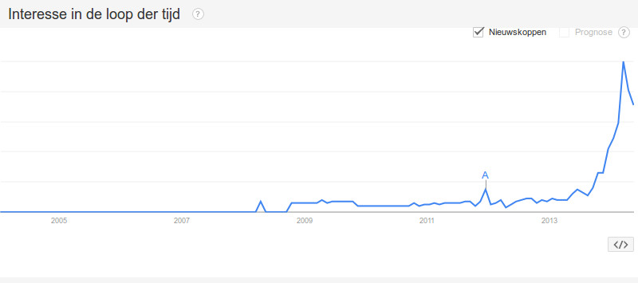

+-------------+ +-----------+
| | HTTP | Apache |
| Browser | +----> | + |
| | | mod_php |
+-------------+ +-----------+
root->$USER
+-------------+ +-----------+ +----------+
| | HTTP | | FastCGI | |
| Browser | +----> | Apache | +-------> | HHVM |
| | | | | |
+-------------+ +-----------+ +----------+
root->$USER $USER
FastCGIExternalServer /hhvm -socket /home/a.babyhuiscasita.nl/sock
Getest op a.babyhuiscasita.nl met Redis cache